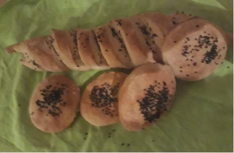

Les pains et brioches
Preparer vos propres pains
Composez vous meme votre pain au ble a lorge aux semoules....
Parsemez les de grains de lin, de sesame, de pavot..
Avec les patisseries d`Emmanuelle la vie est plus belle
Des recettes faciles a realiser pour des preparations elabourees et jamais ratees
votre bolg de patisserie vous offre des recettes faciles et simples
des conseilles pour reussir des recttes elaborees avec des outils du quotidien
vous aurez aussi la possibilite de commenter chaque recette et donner votre avis
ainsi qu qvoir l avis d autres lecteurs et d intereagir apropos des recettes
Preparer vos propres pains
Composez vous meme votre pain au ble a lorge aux semoules....
Parsemez les de grains de lin, de sesame, de pavot..
Reduisez les quantites de sucre ou de gras dans vos gateaux
Faites vous plaisir sans gluten, ou sans oeufs!
Des recettes adaptees a tous les besoins
Dosez vous meme la matiere grasse dans vos cremes
pour decorez vous gateaux
Prepaez des glaces sont conservateurs sans additifs chimiques